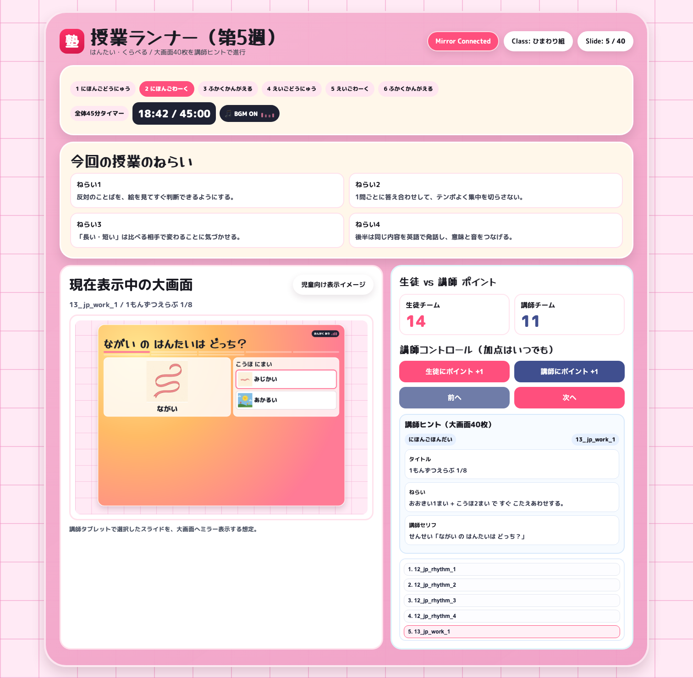
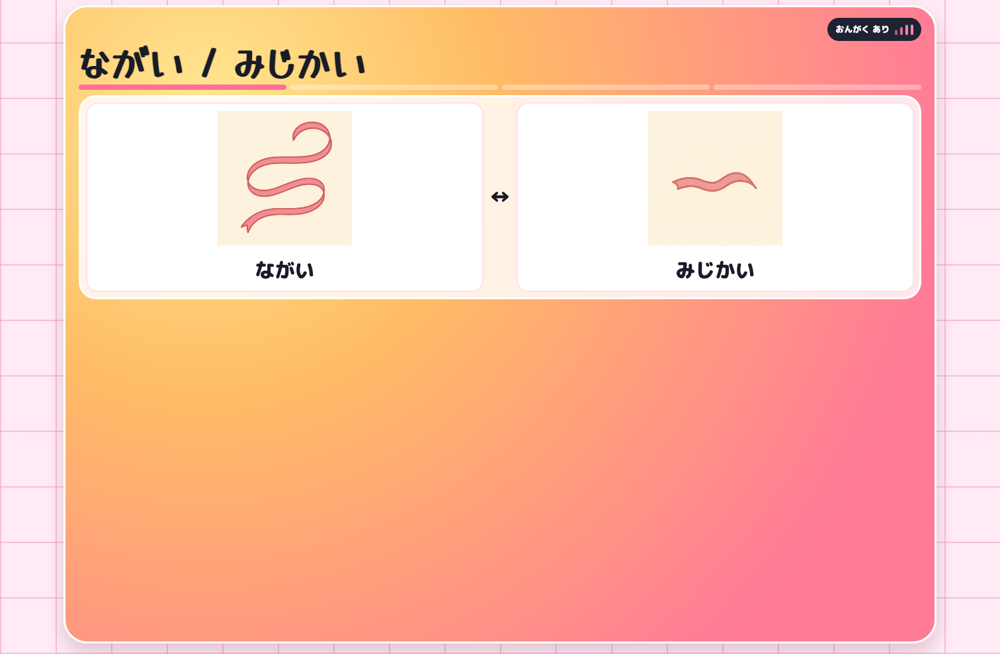
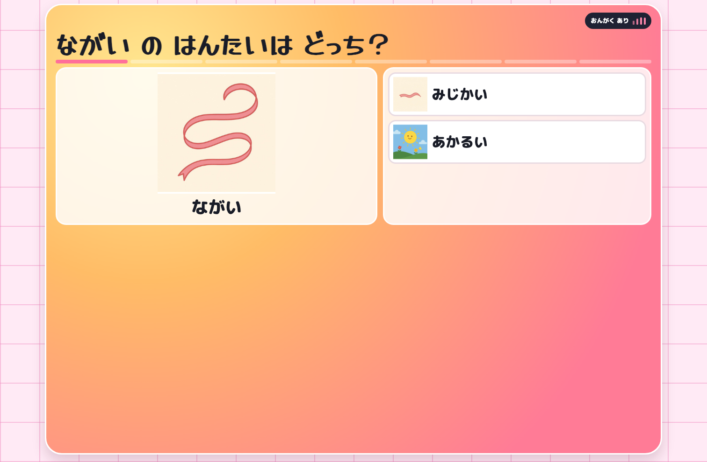
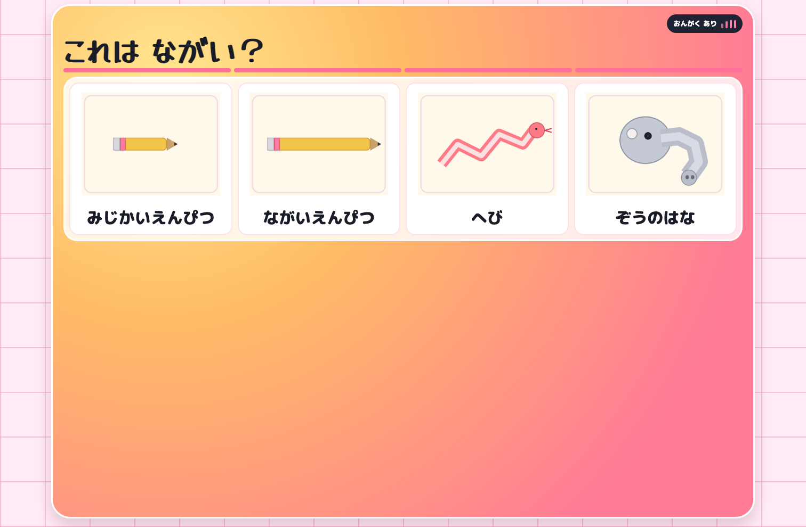
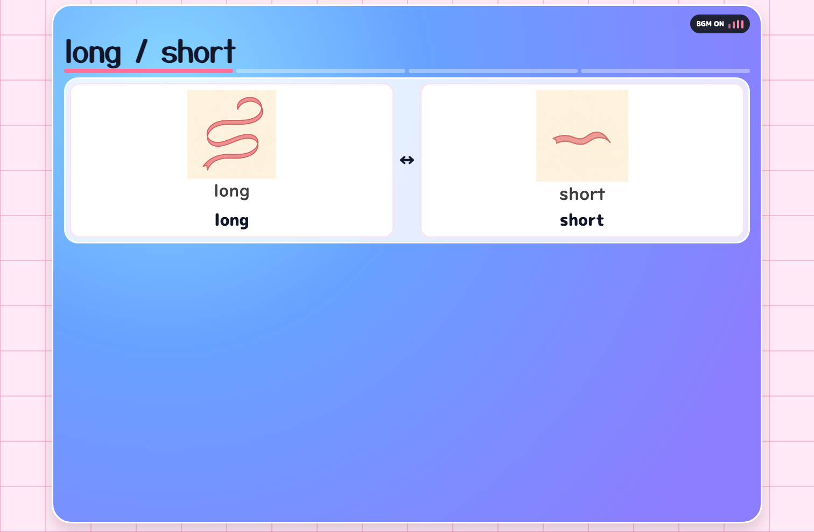
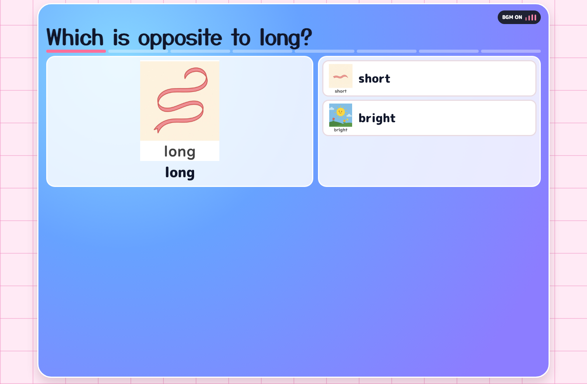
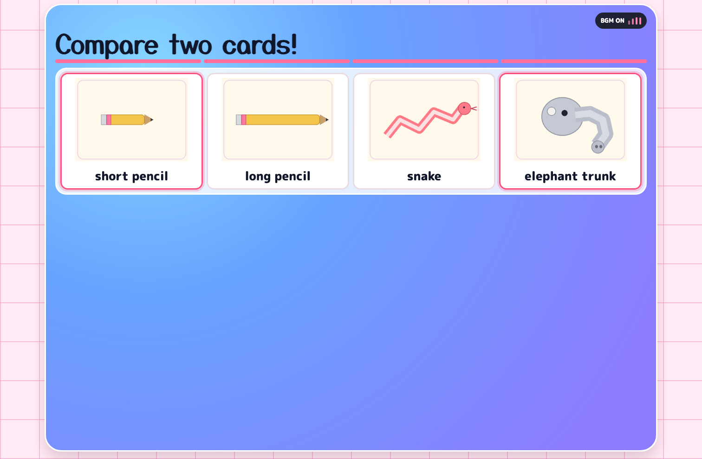

塾
第5週 大画面フロー（完全版）
日本語導入4枚 → 日本語本題8枚 → 深く考える8枚 → 英語導入4枚 → 英語本題8枚 → 深く考える8枚
合計 40 画面
BGM ON
対戦クイズなし
講師タブレット
03 第5週 授業ランナー右下に「講師ヒント（40画面分のタイトル/ねらい/セリフ）」を埋め込み済み

大画面フロー（章ごと）
大画面は幼児向けに、ひらがなのみ表示。授業メタ情報は授業ランナー側に集約。
1. 日本語導入リズム（4画面）
12_jp_rhythm_1〜4

2. 日本語本題ワーク（8画面）13_jp_work_1〜8

3. 深く考える（日本語, 8画面）14_jp_deep_step_1〜4, 15_jp_deep_compare_1〜4

4. 英語導入リズム（4画面）16_en_rhythm_1〜4

5. 英語本題ワーク（8画面）17_en_work_1〜8

6. 深く考える（英語, 8画面）18_en_deep_step_1〜4, 19_en_deep_compare_1〜4
